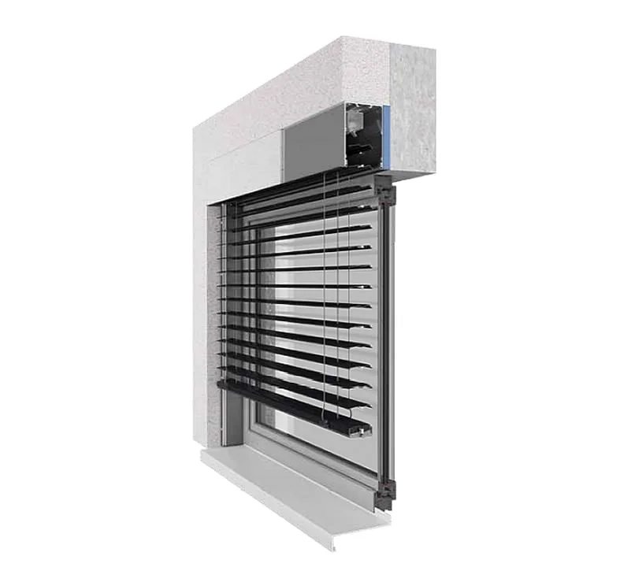

Z 90 BOX · skrivena kaseta
Skrivena izvedba: aluminijska kaseta ugrađuje se ispod žbuke, a revizijski poklopac olakšava pristup i servis. Kasete BOX 1–5 prilagođene su različitim položajima prozora, a BOX 2 i 4 imaju dodatnu izolaciju nadvoja. Z lamele pružaju pojačano zasjenjenje.
- LameleZ
- Maks. š × v4,5 × 3,5 m
- UpravljanjeRučno ili električno
- PrimjenaVanjska